Breakfast deal
- Pastry of choice & coffee£5.00
- Any seeded pretzel & coffee£4.00
- Pretzels4 for £5.00
71A Bell Road, Hounslow TW3 3NX
Artisanal bakery · Bell Road, Hounslow
Step into a world of flavour — sourdough bread, pretzels and artisan delights, baked by hand with Romanian roots. Taste the magic.
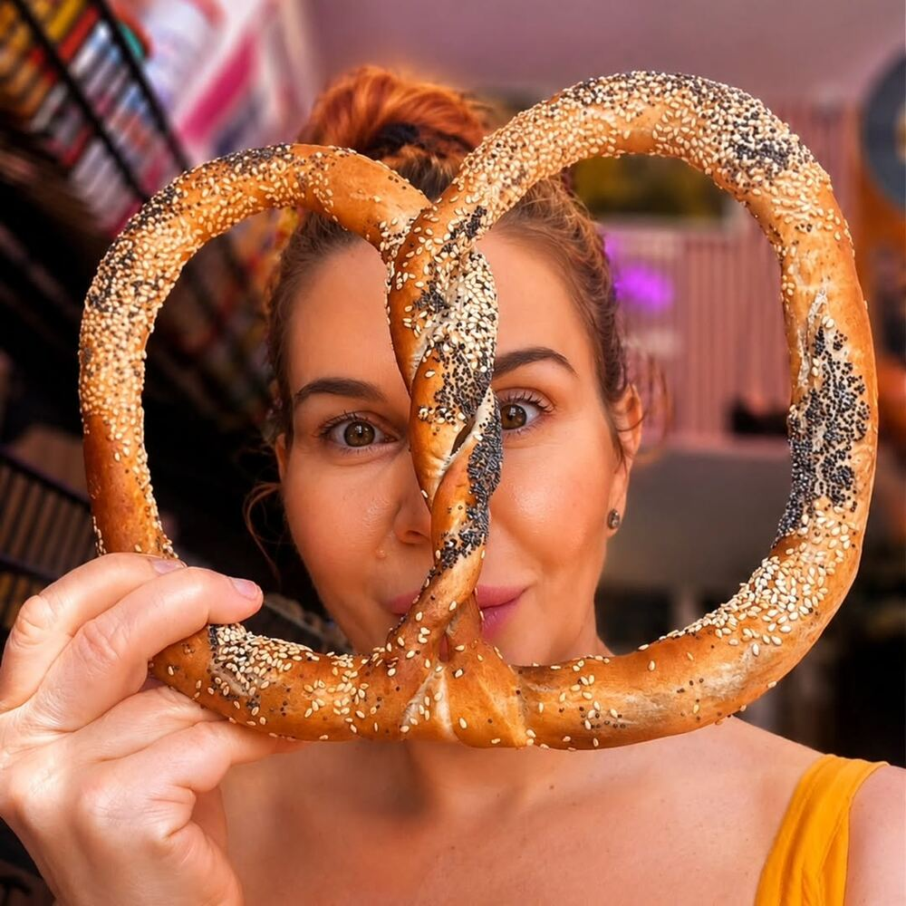
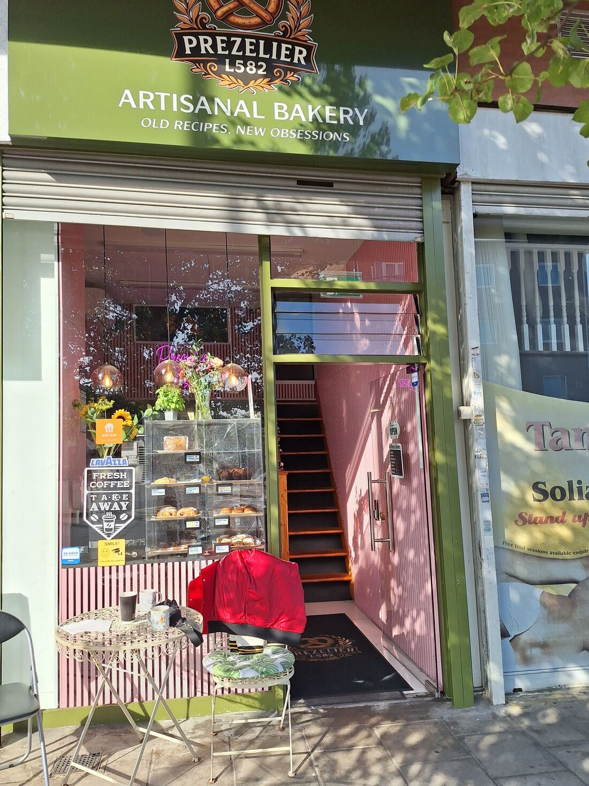
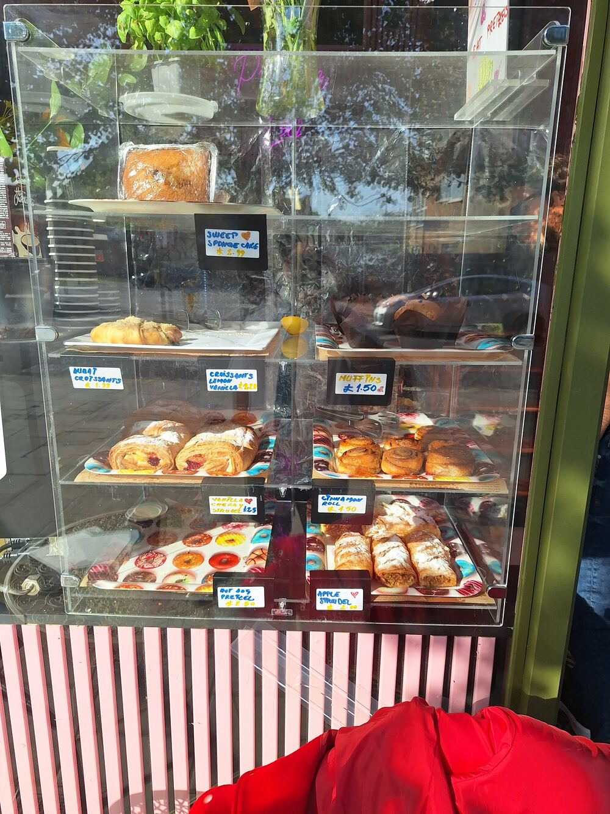
The little green shop on Bell Road
Prezelier L582 is an independent artisanal bakery in the heart of Hounslow. Behind the green shopfront you'll find a glass counter piled with pretzels, sourdough and sugar-dusted pastries, a fresh Lavazza coffee to take away, and a table outside when the sun's out.
The recipes are old ones — the kind handed down in Romanian kitchens: covrigi twisted and seeded by hand, cozonac crowned with walnuts, cornulețe rolled and dusted with sugar. The obsession is new: getting every bake just right, every single morning.
Vă așteptăm cu drag! — we can't wait to see you
Our namesake
Glossy, chewy, golden — and covered in seeds if you like. Grab one with your morning coffee or take a bag home for the family.
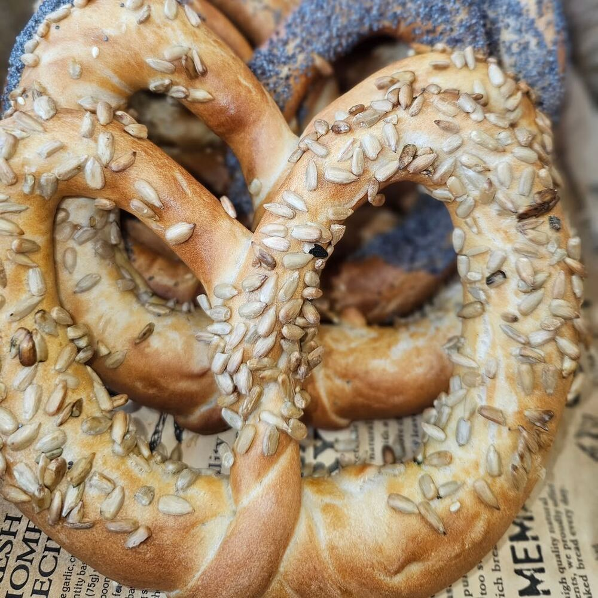
4 for £5Little treats, better prices
Mondays
5 bakes of your choice £10
Sweet, savoury, a little of everything — you choose. Because Mondays are complicated enough. Valid on the day, while stock lasts.
Dulce, sărat, câte puțin din fiecare.
Friday collection
12 treats for £12
Order by Wednesday evening · £3 deposit, taken off the £12 at collection · Limited bags each week
Offers run on selected weeks — follow #PrezelierL582 or give us a call to see what's on.
Order now
Call us to order bakes, reserve a Family Bag or arrange something bigger. You'll also find us on Just Eat for delivery.
Fresh from the counter
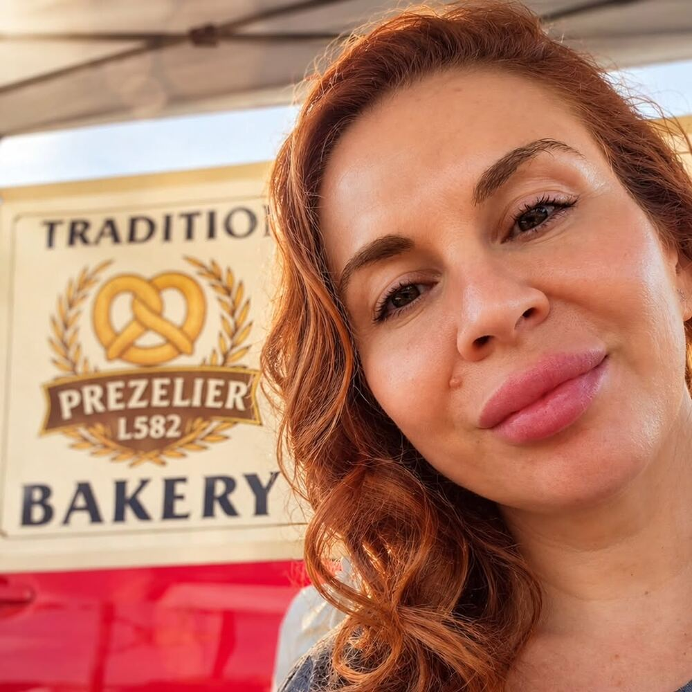
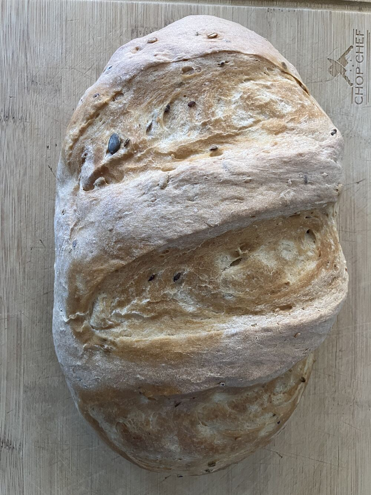
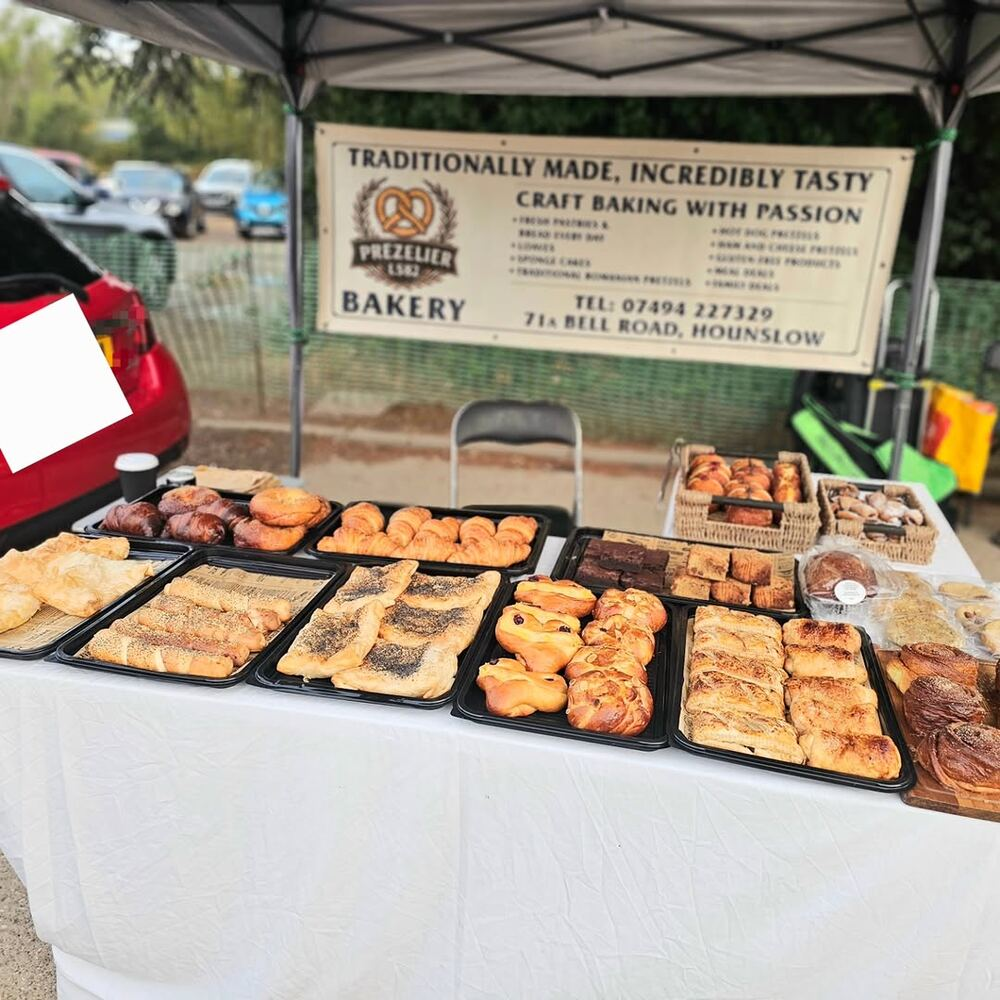
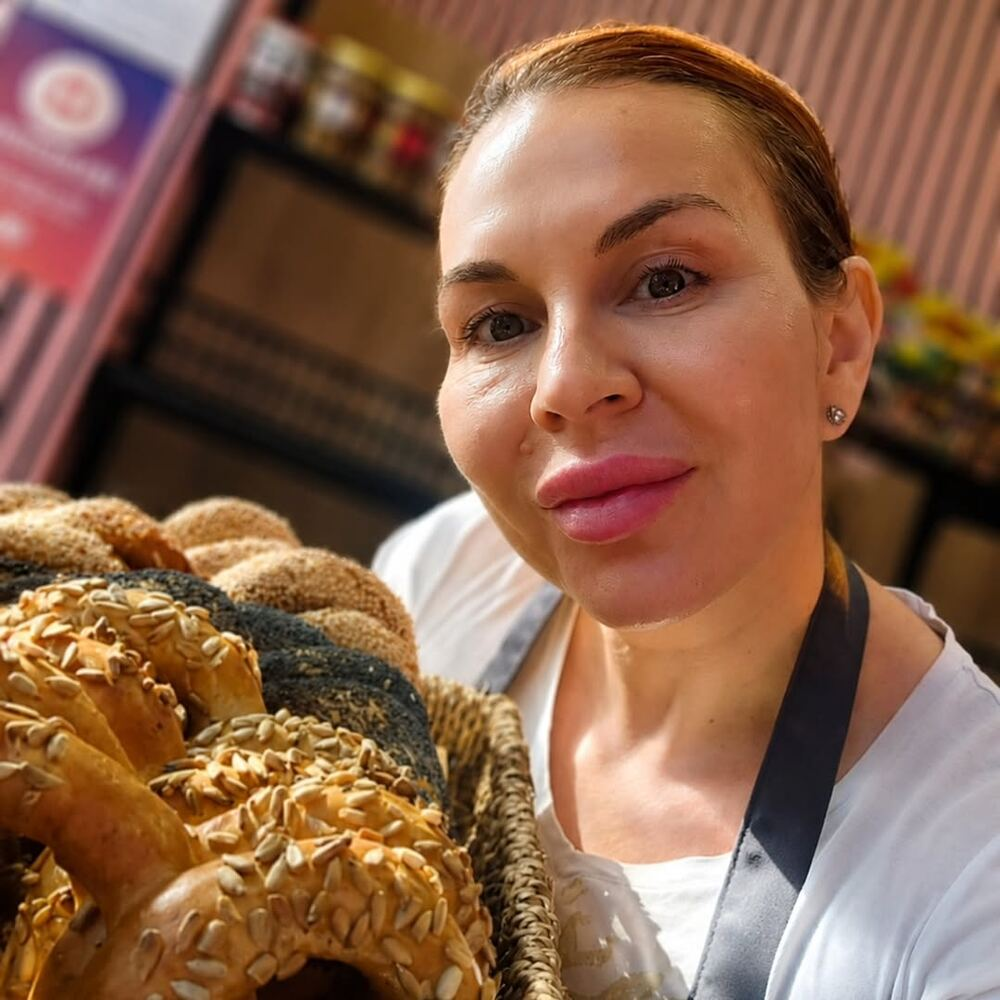
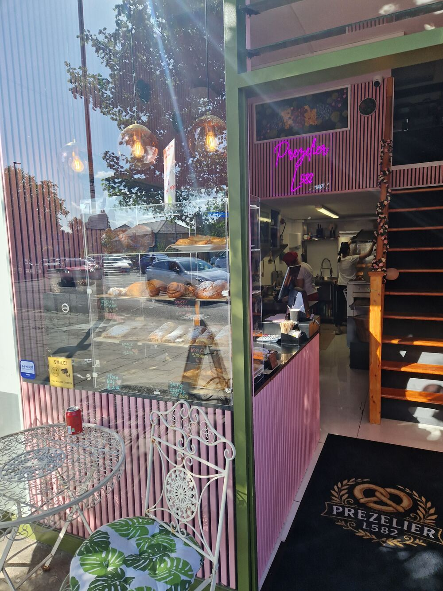
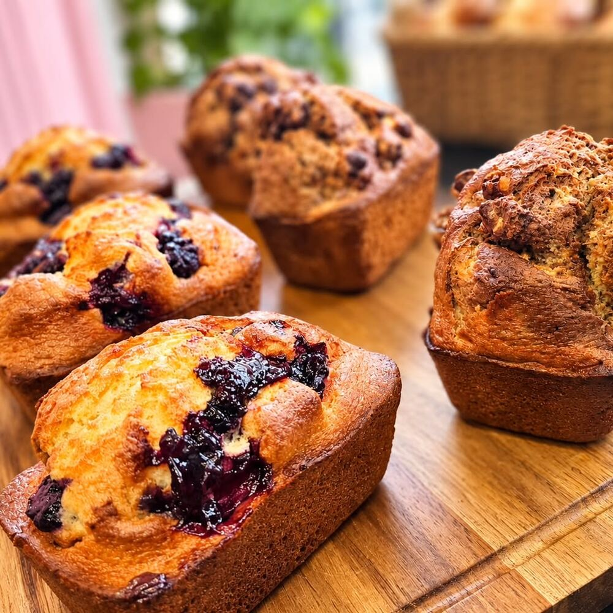
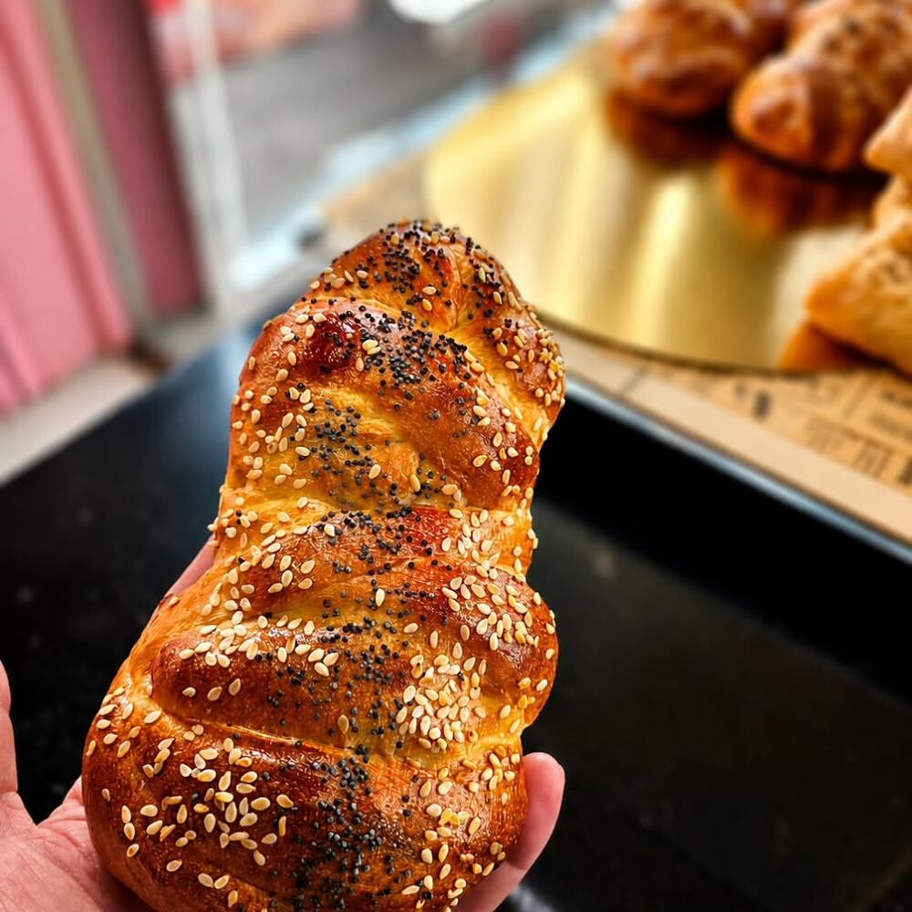
Visit us
Look for the green shopfront with the pretzel crest — the pink stripes inside are hard to miss.